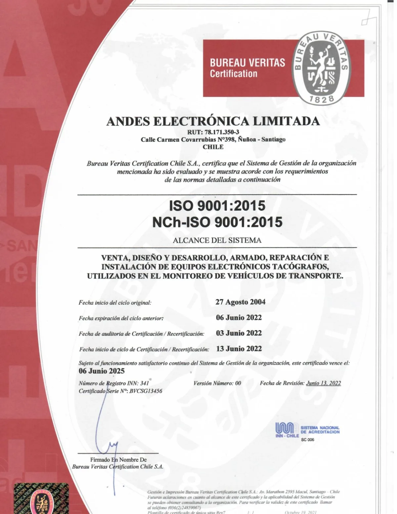

El certificado

- Normas
- ISO 9001:2015 · NCh-ISO 9001:2015
- Organización
- Andes Electrónica Limitada · Carmen Covarrubias N° 398, Ñuñoa, Santiago
- Certificadora
- Bureau Veritas Certification Chile S.A., acreditada por el INN (registro N° 341)
- Certificado
- Serie N° BVCSG13456
- Ciclo original
- Desde el 27 de agosto de 2004
- Ciclo vigente
- 13 de junio de 2022 al 6 de junio de 2025
Alcance
«Venta, diseño y desarrollo, armado, reparación e instalación de equipos electrónicos tacógrafos, utilizados en el monitoreo de vehículos de transporte.»
Descargar el certificado (PDF)
La validez de un certificado se puede confirmar directamente con Bureau Veritas Certification Chile.